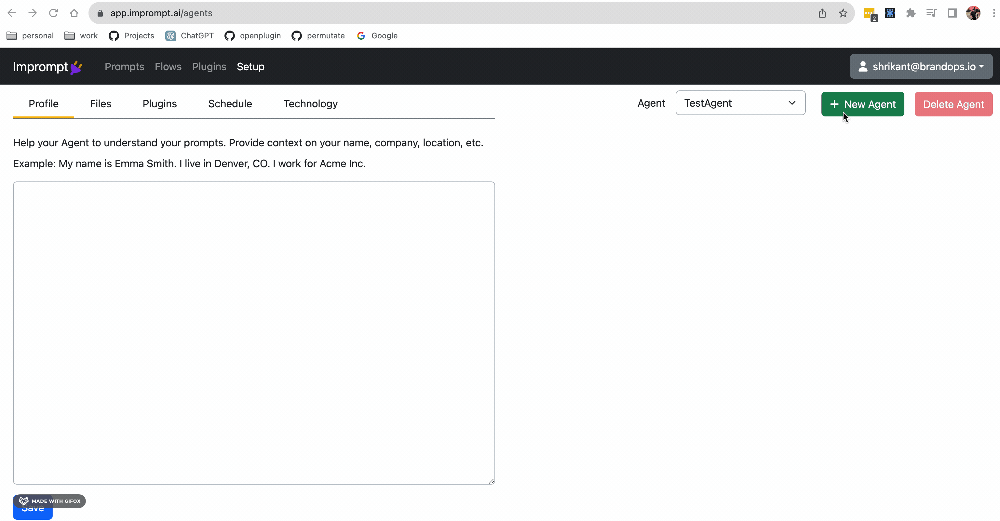
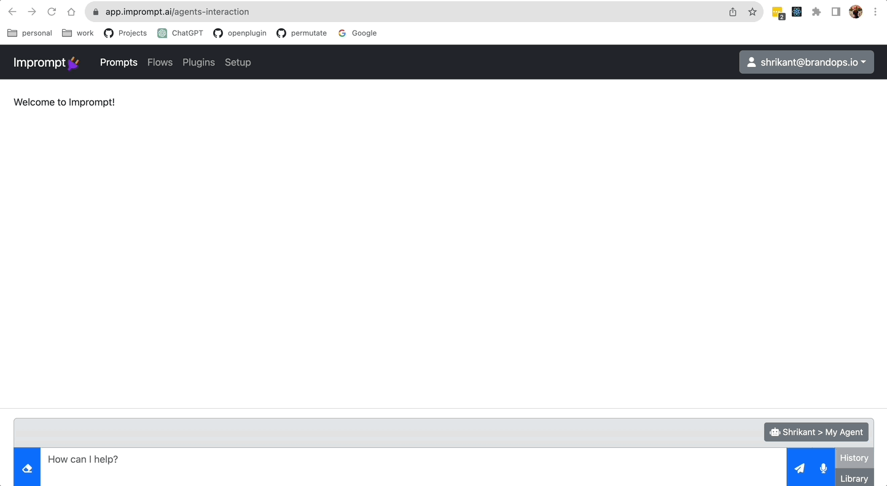

Agents#
An Imprompt agent leverages large language models(LLMs) to generate workflows from assignment statements and able to run a workflow to complete the assignment.
Its primary function is to understand assignment statements and transform them into actionable workflows. Whether it’s a simple to-do list, a complex project plan, or a multi-step business process, the Imprompt Agent can turn it into a seamless and efficient set of tasks.
You can increase your agent’s capabilities by:
Installing plugins
Uploading files
Your can use your personal agent to perform following tasks:
Design a workflow from an assignment.
Run a task.
Run a workflow.
Create a new agent in Imprompt#
Imprompt users can create a personal agent or an organization agent. The organization agent can be used by all the members of the organization.
Install a plugin to an agent#
You can increase capabilities of your agent by installing plugins. You can install plugins from the Imprompt plugin marketplace. Every agent comes default with these systems plugins:
Imprompt Email
Imprompt Web Scraper
Imprompt Web Search
Imprompt File Manager
Upload a file to an agent#
You can provide your agent with text files to use as a data source. You can upload a file from your local machine or from a URL.
We support the various input formats: txt, pdf, odt, doc, docx, rtf, url, mp3.
Data preprocessing pipeline: Documents are broken into chunks, passed through the OpenAI embedding model, then stored in pinecone vector database.
